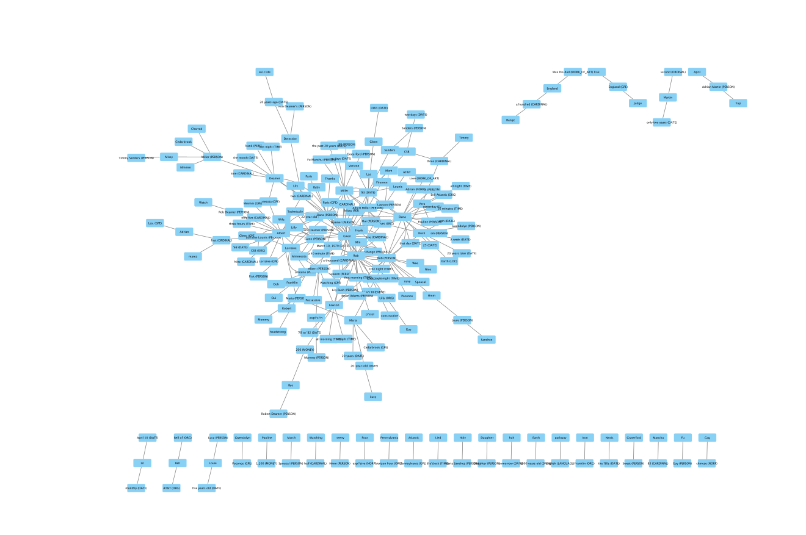
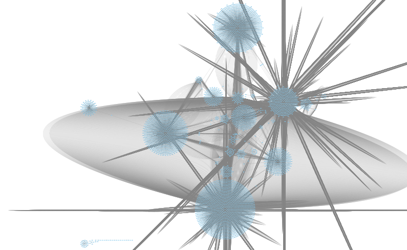

CytoScape Comparisons
CytoScape Music Network: What can one understand from the array
of verbs pulled from the song of it's respective episode? This CytoScape targets
the frequent verbs within the music lyrics of a song featured in a episode. The
theme of the song directly correlates to it's episode. For example: In Episode 8
of Cold Case: Fly Away, the butterfly motif is central to Toya’s school play
("The Flight of the Monarch Butterflies") and repeatedly appears in Rosie's
traumatized memory (“Toya had butterfly wings and bruises”). The song "Heaven"
by Bryan Adams has lyrics focused on freedom, transformation, and fragility —
mirroring Toya's innocence and her tragic attempt to escape abuse. We see this
in the network through the verbs "fly","spread","change", and "believe".
Checkout out our "Soundtrack" and "Episode" page to get more insight on these
overlaps!

This CytoScape shows word frequency in Episode 2.

This Cytoscape network shows how adjectives, verbs,
pronouns, and entities are connected to the episodes they appear in. Those
episodes were pulled out after processing with xslt. It is built on shared
synsets and co-occurrence, with the size and connections of nodes showing
the importance of each term. More prominent nodes appear more often in the
dataset, highlighting their relevance. The clusters in the network often
relate to specific topics, revealing patterns in language and concepts.
Overall, the network highlights recurring themes and key descriptors in the
text.